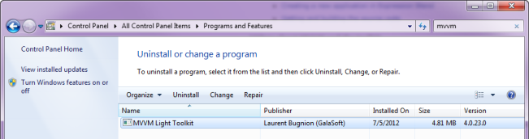
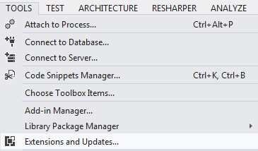
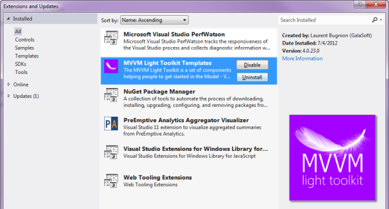

")
MVVM Light Toolkit V4.0
Welcome to a new version of MVVM Light Toolkit!
You just installed the DLLs and code snippets of MVVM Light Toolkit. Thanks for your support! Now you can follow a few simple steps to have a complete development environment.
Installing the project and item templates
In order to create new projects, new views and objects easily in Visual Studio and in Expression Blend, you can install project templates and item templates. Since V4, MVVM Light uses the Visual Studion Extension Manager (VSIX) to install the templates.
- Load the VSIX file corresponding to your Visual Studio environment.
- Visual Studio 2012 Pro, Premium, Ultimate (Silverlight, WPF, WinRT)
- Visual Studio Express 2012 for Windows 8 (WinRT Metro only)
- Visual Studio 2010 Pro, Premium, Ultimate (Silverlight, WPF, Windows Phone)
- Visual Studio 2010 Express for C# (WPF only)
- Visual Studio 2010 Express for Web (Silverlight only)
- Execute the VSIX file you just saved.
- Confirm the installation.
What about Expression Blend?
Project and Item templates for Expression Blend 4 (Silverlight 3 and 4, WPF, Windows Phone 7) are installed automatically, as well as for Expression Blend 4 for Silverlight 5 (Silverlight 5 only).
There are no MVVM Light templates for Expression Blend 5 (for WinRT Metro style applications) at this time. As a workaround, create the new MVVM Light application in Visual Studio 2012, and then open the project in Blend 5.
What about Visual Studio Express 2010 for Windows Phone?
This version of Visual Studio Express does not support Extension Manager. If you have this version installed and do not have Visual Studio Prp, Premium or Ultimate installed, please select "Visual Phone Developer Express" under "Templates" in the installer main window.

What about Visual Studio 2008
Visual Studio 2008 is not supported by the MVVM Light Toolkit installer. For a manual installation, please refer to our legacy page.
More information
You can find more information about MVVM Light V4 at the following locations:
- V4 change log
- MVVM Light Toolkit homepage
- Codeplex site
- Creating a new application in Visual Studio
- Creating a new application in Expression Blend
- Getting and building the source code
Videos about MVVM and the toolkit
- Understanding the MVVM pattern
- Deep Dive MVVM
- MVVM Applied: From Silverlight to Windows Phone to Windows 8
Uninstalling MVVM Light
The MVVM Light binaries and snippets are removed from the Programs and Features control panel in Windows. Templates are removed using the Extensions and Updates menu in Visual Studio 2012 (Extension Manager in Visual Studio 2010).
Binaries and snippets

Templates
 To see this page again
Should you need to see this page again, use the Start menu to locate the MVVM Light program group, and click the readme shortcut.
On Windows 7, open the Start menu, then show all programs and expand the MVVM Light folder.
On Windows 8, press the Start button to open the Start menu, then open the application bar and press the All Applications button. Scroll to see the MVVM Light program group.